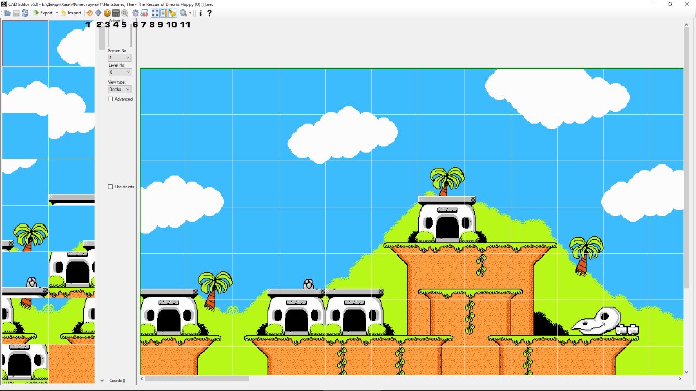
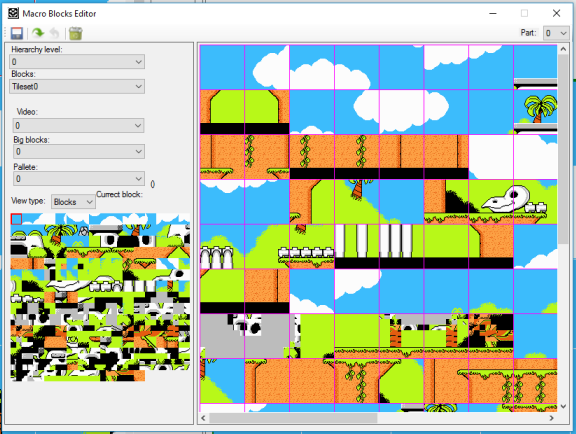
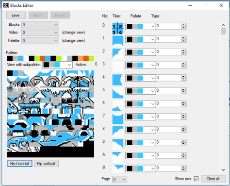
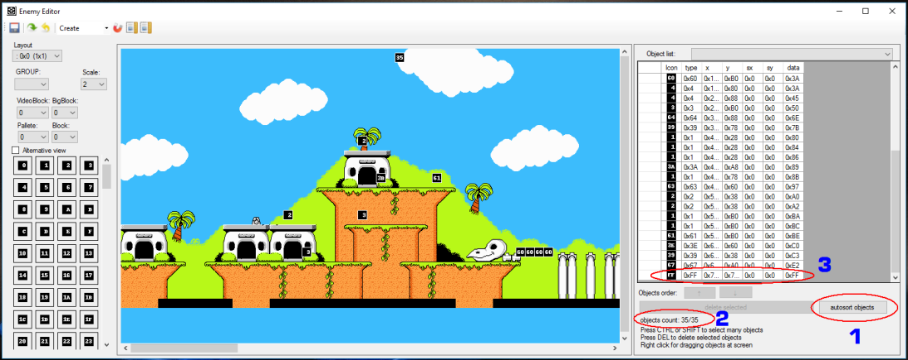

Автор статьи:
Kinbeas
Оригинал:
https://www.emu-land.net/forum/index.php/topic,80421.0.html
Рассмотрим редактирование на примере первого уровня.
Но имейте ввиду, что первый уровень самый сложный для редактирования, так как там слишком много уникальных блоков (практически весь уровень из уникальных блоков) и нюансов по склейке блоков друг с другом (визуальных и по свойствам). Есть выступы, через которые можно пройти и через которые нельзя. Поэтому если побаловаться, лучше потом выбирать или город с лодкой или ледяной уровень. Джунгли тоже сложноваты.
Основы
Скачиваем редактор, разархивируем, запускаем.
В Config file name выбираем:
\settings_flintstones_rescue_of_dino_and_hoppy\Settings_Flintstones-1.cs.
В ROM file name выбираем:
Flintstones, The - The Rescue of Dino & Hoppy (U) [!].nes.
Важно открывать именно эту региональную версию рома. Для японской или европейской версии отличаются адреса списка объектов, поэтому редактор объектов работать не будет.
Как только открывается редактор, назовём это фоновым режимом. В нём сразу можем редактировать уровень - менять блоки. Слева доступные блоки, справа - сам уровень. Всё просто и интуитивно понятно. Отмечу лишь, что на самой структуре уровня интересующие блоки можно копировать на правую кнопку мыши. Вверху в меню можно нажать на лупу, чтобы регулировать масштаб отображения.
Редактирование больших блоков (макроблоков)
Если вы решите, что вам нужны какие-то другие макроблоки, их можно отредактировать на кнопку 1 (на первом скрине) - Macro Bloks Editor. В этом окне справа у вас есть все доступные макроблоки, слева - все доступные на этом уровне микроблоки. Просто склеиваете из левых кусков большие блоки справа. На самих больших блоках так же можно копировать на правую кнопку мыши.
Естественно, редактировать вы должны те блоки, которые вам не нужны в первозданном их виде. Не рекомендую редактировать часто используемые блоки (например, землю и выступы), иначе по всему уровню появятся отредактированные и придётся вручную всё исправлять. На этот случай лучше всегда сохранять резервные копии рома, иначе с помощью редактора глобальные ошибки непоправимы.
Рекомендую делать так. Пробежаться взглядом по уровню, выявить те блоки, которые вам не нужны - удалить/заменить их на уровне. Затем нажать на кнопку 7. Там выбираем в папке редактора \settings_flintstones_rescue_of_dino_and_hoppy\Settings_Flintstones-1.cs и нажимаем Run.

Вот например я на уровне убрал два блока, составляющие череп большого скелета. Теперь скрипт выдаёт, что блоки 36 и 37 в данный момент не используются. Нумерацию блоков можно увидеть в окне Macro Blocks Editor в самом правом нижнем углу (отображается номер блока, на который навели курсор мыши).
Редактирование блоков
В предыдущем разделе мы составляли глобальные блоки из мини блоков. Но и мини блоки состоят из 2х2 тайлов. И именно эти блоки обладают определёнными свойствами. Чтобы редактировать их, нажимаем кнопку 2 - Blocks Editor.
Слева мы видим набор тайлов. Справа - сами блоки, которые 2х2 состоят из этих тайлов. например, блок 0 состоит из четырёх одинаков сплошных тайлов. Здесь также можем склеивать блоки, как душе угодно. Правее от блоков можно выбрать одну из четырёх основных палитр. Ещё правее - задаём блоку свойство. Ниже приведу основные из них:
Типы блоков: 0 - фоновый. Фред никак с ним не взаимодействует. 1 - платформа, на которую можно запрыгнуть и снизу. 2 - выступ справа (за который цепляемся, чтобы подняться) 3 - выступ слева 4 - выступ с двух сторон (например, кости скелета на уровне с городом и лодкой) 5 - пружина, батут 6 - шипы нижние 7 - шипы верхние 9 - конвейер влево А - конвейер вправо 40,42 - скатывание по диагонали вниз 81 - сплошной блок, через который нельзя пройти
Если вас не устраивают какие-то тайлы, их можно перерисовать. Только уже с помощью сторонних специальных программ, например yychr_2012_04_07_yur.
(!)Только будьте осторожны с сохранениями. Если открывать один и тот же ром разными программами и параллельно вносить изменения, сохранение в одной программе сотрёт изменения, сделанные в другой программе. Поэтому в таких случаях всегда действуйте последовательно!
Что нельзя менять с помощью редактора
С помощью редактора нельзя на уровне поменять:
- Подключение и отключение дополнительных палитр (например, палитра рога в джунглях).
- Подключение и отключение дополнительных банков тайлов (графика для всех крупных скелетов и т.п.).
- Свойства фоновых изображений (спрайты могут быть на заднем плане, могут быть на переднем плане, а могут закрывать только врагов, но не закрывать Фреда).
- Телепорты (которые, например, используются в замке, где вы заходите в проходы и появляетесь в другом месте).
- В версии редактора 50 ещё не было конфига для последнего уровня, где мы попадаем в будущее.
Расстановка объектов
Чтобы изменить расстановку врагов и призов, нажимаем кнопку 3 - Enemy Editor.
Сразу отмечу, что на экране может быть не больше двух разных врагов. Зато на самом уровне их можно ставить абсолютно любых - хоть со всей игры в один уровень поместить, так как данные каждого объекта (спрайты, палитра) подгружаются индивидуально.
Слева в ряд видим тонну объектов. Вот архив с вордовским файлом - там указаны изображения - какие призы, враги и интерактивные платформы скрываются за каждым номером.
По центру вы видите саму карту с расставленными объектами. На правую кнопку мыши их можно выделять, затем перетаскивать или удалять. Обратите внимание на левый верхний угол окна. Там есть активированное действие:
- Create. В том месте, где щёлкните левой кнопкой мыши по уровню, появится объект, выбранный в левых столбиках. Стоит отметить, что вам лишь со временем удастся прицеливаться так точно, чтобы объекты находились ровно на земле. Отмечу лишь, что они появляются немного правее от выбранного вами места.
- Select. Действие, чтобы лишь выбрать объект. Но гораздо проще выделять объект на правую кнопку мыши.
- Delete. Удаляем объект, на который укажем. Впрочем, объекты можно удалять и с помощью одноимённой клавиши на клавиатуре.
А теперь ВНИМАНИЕ! ВАЖНЫЕ ВЕЩИ, КОТОРЫЕ НАДО ЗНАТЬ, ЧТОБЫ НЕ ИСПОРТИТЬ РОМ!
Справа от уровня мы видим важную информацию.
Во-первых, чтобы переставленные объекты появлялись в игре, вам надо ОБАЯТЕЛЬНО ПЕРЕД КАЖДЫМ СОХРАНЕНИЕМ нажимать autosost objects (цифра 1)! Без автосортировки объектов они будут стоять в неправильном порядке и игра не будет их воспринимать. То есть все объекты, как они идут на уровне слева-направо, все они должны идти по-порядку в таблице Objects list.
Во-вторых, вам надо следить за допустимым количеством объектов (цифра 2). На каждом уровне цифра разная. На первом объектов 35, причём последний из них должен быть 0xFF. Добавлять объектов больше, чем положено - крайне не стоит.
В-третьих, вам крайне важно следить за тем, чтобы в конце этой самой таблицы был объект 0xFF (цифра 3)!!! Если его не будет, игра начнёт лагать после прохождения уровня. Когда вы удаляете объекты и нажимаете автосортировку, после чего повторно открываете редактор объектов, в конце может накапливаться несколько объектов 0xFF - они автоматически заполоняют пустое пространство. Лишние можно смело удалять, но один в конце всегда оставляйте!